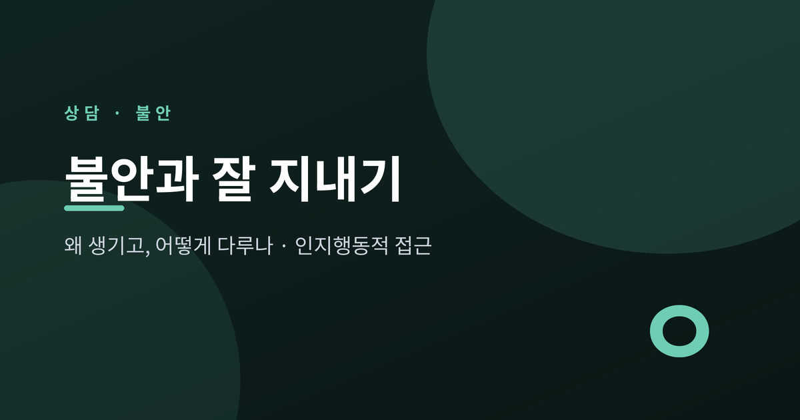
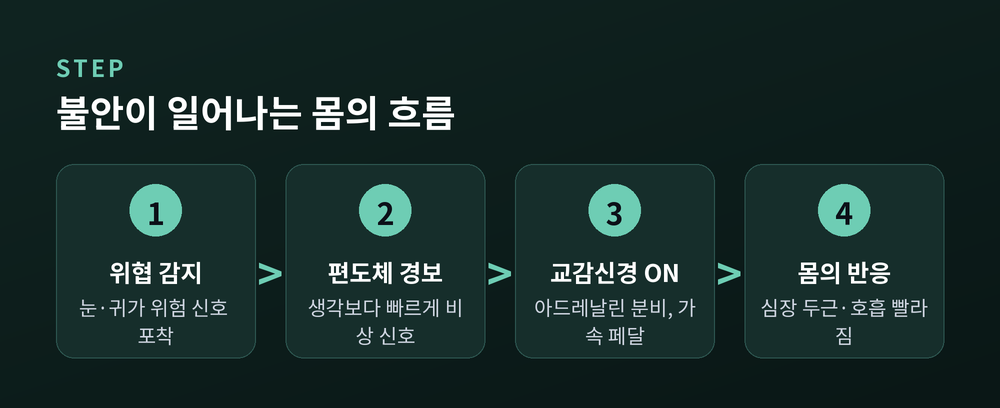
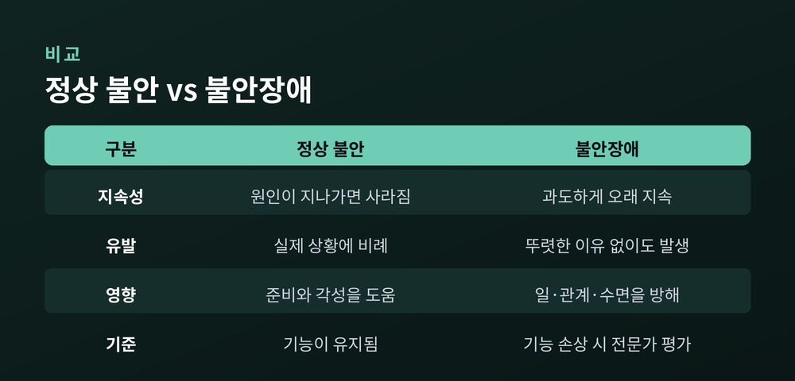
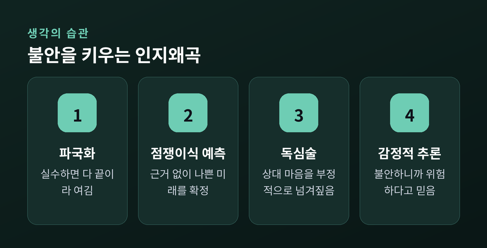
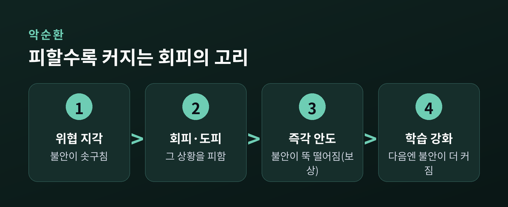
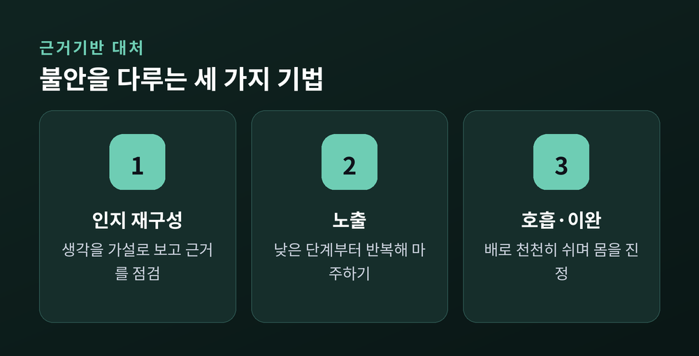

불안 다스리기 — 불안은 왜 생기고 어떻게 다루나 (인지행동적 접근)

오늘은 불안을 다루는 법에 대해 이야기해 보려 합니다.
먼저 결론부터 말씀드립니다. 불안은 없애야 할 고장이 아니라, 잘 지내는 법을 배워야 할 몸의 신호입니다.
이 글에서는 불안이 왜 생기는지, 그리고 인지행동적 접근으로 어떻게 다루는지를 근거에 기대어 차분히 정리하겠습니다.
불안은 원래 나를 지키려는 장치입니다
불안을 문제라고만 여기기 쉽습니다.
하지만 불안은 우리 몸에 내장된 생존 장치입니다.
위협을 감지하면 뇌의 편도체가 먼저 반응합니다.
편도체는 공포와 감정을 처리하는 부위입니다.
위험이라고 판단되면 편도체는 곧바로 시상하부에 비상 신호를 보냅니다.
이 판단은 우리가 의식하기도 전에, 생각보다 훨씬 빠르게 일어납니다.
그다음 자율신경계가 움직입니다.
교감신경은 자동차의 가속 페달과 같습니다.
투쟁-도피 반응을 켜서 몸에 에너지를 몰아줍니다.
부신에서 아드레날린이 나오고, 심장이 빠르게 뛰며, 근육으로 피가 몰립니다.
지금 당장 급하지 않은 소화 기능은 잠시 뒤로 밀립니다.
가슴이 두근거리고, 숨이 얕아지고, 손에 땀이 나는 이유가 여기 있습니다.
예전엔 그 증상들을 위험의 증거로 읽었습니다.
지금은 다르게 봅니다 — 몸이 정상적으로 대비 태세에 들어간 신호일 뿐입니다.

위험이 지나가면 부교감신경이 브레이크 역할을 합니다.
몸을 진정시키고, 다시 쉬고 소화하는 상태로 돌립니다.
불안이 영원히 계속되지 않는 것은 이 브레이크 덕분입니다.
어디까지가 자연스러운 불안일까요
모든 불안이 문제인 것은 아닙니다.
정상 불안은 실제 상황에 비례합니다.
시험이나 발표를 앞둔 긴장은 오히려 우리를 준비시킵니다.
그리고 그 일이 지나가면 자연스럽게 가라앉습니다.
문제는 불안이 선을 넘을 때입니다.
과도하고, 오래 지속되며, 일과 관계와 일상을 방해할 때입니다.
뚜렷한 이유가 없는데도 찾아오거나, 집을 나서기 어려울 만큼 삶을 무너뜨릴 때는 불안장애를 의심합니다.
핵심 기준은 하나입니다 — 기능이 무너지는가.

불안장애는 드문 병이 아닙니다.
세계보건기구에 따르면 2021년 기준 전 세계에서 3억 5,900만 명이 영향을 받았습니다.
불안장애는 가장 흔한 정신질환입니다.
다행히 불안은 치료가 잘 되는 문제입니다.
그런데 실제로 도움을 찾는 사람은 열 명 중 네 명이 채 되지 않습니다.
낙인과 접근성 때문입니다.
흔하고, 치료되고, 그런데도 많은 사람이 혼자 견딘다는 뜻입니다.
불안을 키우는 것은 생각의 습관입니다
같은 상황도 어떻게 해석하느냐에 따라 불안의 크기가 달라집니다.
정신과의사 아론 벡은 1960년대에 이런 생각의 습관을 인지왜곡이라 불렀습니다.
불안을 키우는 대표적인 왜곡 몇 가지를 소개합니다.
가장 강력한 것은 파국화입니다.
나쁜 결과의 가능성은 부풀리고, 그것을 감당할 자신의 힘은 깎아내리는 사고입니다.
"이번에 실수하면 모든 게 끝이다" 같은 생각이 여기 속합니다.
점쟁이식 예측도 흔합니다.
근거도 없이 나쁜 미래를 미리 확정해 버립니다.
독심술은 상대의 마음을 넘겨짚습니다.
"저 사람은 분명 나를 한심하게 볼 것이다"처럼 말입니다.
감정적 추론도 자주 우리를 속입니다.
"불안하게 느껴지니까 실제로 위험한 거야"라고 믿는 것입니다.

여기서 기억할 것이 하나 있습니다.
생각은 사실이 아니라 하나의 정신적 사건입니다.
불안한 생각은 검증해 볼 수 있는 가설일 뿐입니다.
피할수록 불안이 커지는 이유
불안할 때 우리는 본능적으로 피합니다.
피하면 불안이 순식간에 뚝 떨어지기 때문입니다.
문제는 그 안도감이 보상처럼 작동한다는 데 있습니다.
뇌는 "피하니까 편해졌다"를 학습합니다.
그리고 이 학습은 다음번 회피를 더 강하게 만듭니다.
회피는 당장은 편하지만, 뇌에 틀린 교훈을 심습니다.
"그 상황은 위험했고, 도망쳐서 안전했다"는 교훈입니다.
피할 때마다 위협감이 다시 확인되어, 불안은 다음번에 더 커집니다.
완전히 피하지는 못할 때 쓰는 작은 회피도 있습니다.
늘 구석 자리에 앉거나, 물병을 꼭 쥐고 있거나, 대화 중 휴대폰만 만지작거리는 행동입니다.
이런 안전행동은 불안이 스스로 내려갈 기회를 막아, 두려움을 그대로 유지시킵니다.

물론 모든 회피가 나쁜 것은 아닙니다.
잠깐 물러서는 것이 지혜로울 때도 있습니다.
다만 습관이 된 회피는 불안을 유지시키는 핵심 고리라는 점은 분명합니다.
근거기반으로 불안을 다루는 법
그렇다면 어떻게 해야 할까요.
인지행동치료가 제안하는 방법은 크게 세 갈래입니다.
첫째, 생각을 다시 살펴봅니다.
이것을 인지 재구성이라 합니다.
불안한 생각이 떠오르면 이렇게 물어봅니다.
"이 생각의 근거는 무엇인가. 반대되는 근거는 없는가. 정말 최악이 일어난다면 나는 어떻게 대처할 수 있는가."
가까운 친구가 같은 처지라면 뭐라고 말해 줄지 떠올려 보는 것도 도움이 됩니다.
둘째, 조금씩 마주합니다.
회피의 반대가 노출입니다.
두려운 상황을 낮은 단계부터 천천히, 반복해서 마주하는 것입니다.
그러면 뇌가 새로 배웁니다 — 실제로는 안전하고, 불안은 시간이 지나면 스스로 내려간다는 것을.
노출은 공포증과 공황, 사회불안 치료의 필수 요소로 꼽히는, 근거가 탄탄한 방법입니다.
셋째, 호흡으로 몸을 돕습니다.
천천히 배로 쉬는 횡격막 호흡은 심박을 낮추고 불안을 줄이는 데 도움이 됩니다.
비용이 들지 않고, 혼자서도 할 수 있는 방법입니다.
다만 한 가지는 짚어 두겠습니다.
호흡은 불안을 없애려는 도구가 아니라, 견디며 지나가게 돕는 보조 수단입니다.

여기에 생활의 토대를 더합니다.
규칙적인 운동, 충분한 수면, 카페인과 술의 절제.
이런 자기돌봄은 자율신경을 안정시켜 불안의 바탕을 낮춥니다.
인지행동치료를 받은 사람의 약 60퍼센트가 불안 증상의 실질적인 호전을 보고합니다.
필요하다면 약물도 효과적인 선택지가 됩니다.
혼자 견디지 않아도 됩니다
한 가지만은 분명히 말씀드리고 싶습니다.
불안이 오래 지속되고, 일상과 수면과 관계를 방해하고, 활동을 자꾸 피하게 만든다면 전문가의 도움을 받으시길 권합니다.
불안은 치료가 잘 되는 문제이고, 검증된 방법이 이미 나와 있습니다.
스스로를 탓할 일도 아닙니다.
불안을 느낀다는 것은 당신의 몸이 제 역할을 하고 있다는 뜻입니다.
다만 그 경보가 너무 자주, 너무 크게 울린다면 함께 손볼 수 있습니다.
정리하면 이렇습니다.
불안은 없애야 할 적이 아니라, 이해하고 다뤄야 할 신호입니다.
생각을 검증하고, 피하지 않고 마주하고, 몸을 돌보는 일 — 이 셋이 방향입니다.
"불안을 이기려 애쓰기보다, 불안과 나란히 걷는 법을 배웁니다."
불안이 사라지느냐고 물으신다면, 꼭 그렇지는 않다고 답하겠습니다.
다만 불안에 끌려다니지 않고 내 삶을 살아갈 수는 있습니다.
그 걸음은 오늘, 아주 작은 한 발부터 시작됩니다.
이 글은 일반적인 정보를 담은 것으로, 전문적인 상담이나 진단, 치료를 대체하지 않습니다.
불안이 일상을 크게 방해하거나 위기 상황이라면 정신건강 위기상담 등 가까운 전문 자원에 연락하시길 권합니다.